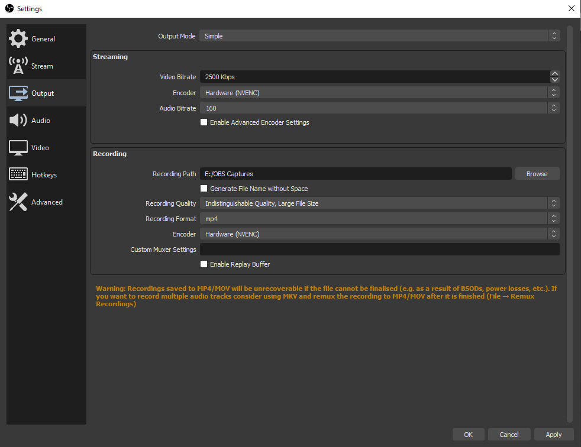
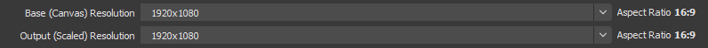
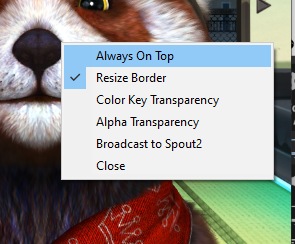
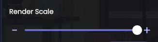
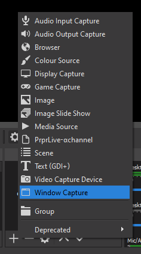
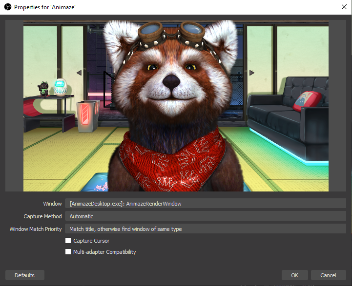
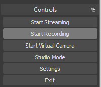

Recording Dedicated Capture Window with OBS (recommended)
Recording with OBS is a relatively simple process with the advantage of being in real-time. The quality of the video does depend on the system's power as there are two key elements that need to happen at the same time: high-resolution rendering and high-resolution video encoding. Both are high CPU and GPU intensive processes.
Overview
We’ll use OBS to capture the Dedicated Capture Window from Animaze, recording the performance in real-time. For the purpose of this article, we are using OBS 27.2.4 (downloaded from here: Open Broadcaster Software | OBS).
Any other recording software works as well, make sure it has the capability of capturing an application window.
Steps
1. (in OBS) Set proper recording settings. Open OBS, go to Settings and navigate to the Output tab. Make sure these options are as follows:
a. Recording Quality: Indistinguishable Quality, Large File Size
b. Recording Format: mp4
c. Encoder: Hardware (NVEC). If this option is not available go for Software (x264).

2. (in OBS) Now, still in OBS Settings, navigate to Video tab and change the Base (Canvas) Resolution to the highest value or your preferred output, as well as the Output (Scaled) Resolution to the same value.


3. (in Animaze) Go to Animaze and open the Dedicated Capture Window (shortcut Ctrl+S). Right-click anywhere inside the newly spawned window, and uncheck the Always On Top option. This will help us move other windows on top of the render window.

4. (in Animaze) Now, double-click anywhere inside the newly spawned window. This will maximize the window to the current monitor. Ideally, you would do this on a monitor with a larger resolution. The same thing should be done with the main Animaze app window (maximize it on the largest monitor you have). Animaze’s rendering resolution is 1:1 with the window size on screen, so if you maximize the main window on a 4k monitor, Animaze renders at 4K resolution.
5. (in Animaze) We can further increase resolution by increasing the render scale. In Animaze, go to Settings > Video Graphics > Render Scale and dial the slider to the right (max value). This option will increase the resolution 2x on each side, practically increasing resolution by 4 times. This makes it so that on a 1080p monitor, Animaze maximized with max render scale will be able to render 4K video frames.


6. (in OBS) Now, add a Window Capture source

7. (in OBS) in the Window Capture properties window, make sure you have the following options set:
a. Window: [AnimazeDesktop.exe]: AnimazeRenderWindow
b. Capture Cursor: unchecked.

8. (in OBS) Start recording the video

(in OBS) Stop recording the video
Done. Navigate to where OBS exports the recording and check out the magic you’ve done.
Note: setting the render scale to max will impact GPU usage, if you experience frame drops or low framerates, adjust the rendering settings so the load can be handled by the system.